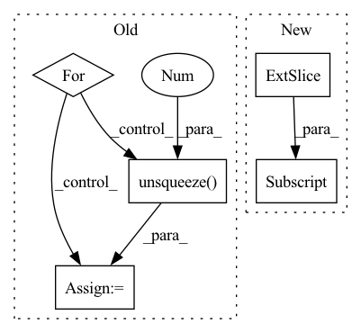

Pattern ID :3023
Before Change
ml = self.ml(input=mask, clean=clean, noisy=noisy, max_bin=max_bin)
if self.sl_f != 0 and self.sl is not None:
sl = torch.zeros((), device=clean.device)
for mss in multi_stage_specs:
mss = as_complex(mss.squeeze(1)).unsqueeze(1 )
sl += self.sl(input=mss, target=clean[..., : mss.shape[-1]])
else:
sl = self.sl(input=enhanced, target=clean)
if self.mrsl_f > 0 and self.mrsl is not None:After Change
clean_td = self.istft(clean)
if multi_stage is not None:
// leave out erb enhanced
multi_stage_td = self.istft(multi_stage[:, 1:] )
ml, sl, mrsl, cal = [torch.zeros((), device=clean.device)] * 4
if self.ml_f != 0 and self.ml is not None:In pattern: SUPERPATTERN
Frequency: 3
Non-data size: 5
Instances Fragment ID: 16373653
Project Name: rikorose/deepfilternet
Commit Name: 2aacf4d049fc9e7b073c15d705c60f87f3d554f7
Time: 2022-04-12
Author: h.schroeter@pm.me
File Name: DeepFilterNet/df/loss.py
M Class Name: Loss
N Class Name: Loss
M Method Name: forward(10)
N Method Name: forward(10)
M Parent Class: nn.Module
N Parent Class: nn.Module
M File Name: DeepFilterNet/df/loss.py
N File Name: DeepFilterNet/df/loss.py
M Start Line: 468
M End Line: 474
N Start Line: 456
N End Line: 485
Before Change
d = x.dim()
for _ in range(3 - d):
x = x.unsqueeze(0 )
x = torch.sign(x)
x = self.pad(x)
x = x.unfold(-1, self.frame_length + 1, self.frame_length)After Change
x = torch.sign(x)
x = torch.cat((x[..., :1] , x), dim=-1)
x = x.unfold(-1, self.frame_length + 1, self.frame_length)
z = 0.5 * torch.abs(x[..., 1:] - x[..., :-1]).sum(-1)
if self.norm: Fragment ID: 16373652
Project Name: sp-nitech/diffsptk
Commit Name: c71e34ed516f1d63687f4f2135d421d08cedfd44
Time: 2022-04-15
Author: takenori.yoshimura24@gmail.com
File Name: diffsptk/core/zcross.py
M Class Name: ZeroCrossingAnalysis
N Class Name: ZeroCrossingAnalysis
M Method Name: forward(2)
N Method Name: forward(2)
M Parent Class: nn.Module
N Parent Class: nn.Module
M File Name: diffsptk/core/zcross.py
N File Name: diffsptk/core/zcross.py
M Start Line: 69
M End Line: 82
N Start Line: 67
N End Line: 68
Before Change
self.weight_read = torch.matmul(past_normalized, state_normalized.transpose(0, 1)).transpose(0, 1)
self.index_max = torch.sort(self.weight_read, descending=True)[1].cpu()
for i_track in range(self.num_prediction):
present = present_temp
prediction_single = torch.Tensor().cuda()
ind = self.index_max [:, i_track]
//ablation study
// prediction_single = self.memory_count[ind]
// prediction = torch.cat((prediction, prediction_single.unsqueeze(1)), 1)
info_future = self.memory_fut[ind]
info_total = torch.cat((state_past, info_future.unsqueeze(0)), 2)
input_dec = info_total
state_dec = zero_padding
for i in range(self.future_len):
output_decoder, state_dec = self.decoder(input_dec, state_dec)
displacement_next = self.FC_output(output_decoder)
coords_next = present + displacement_next.squeeze(0).unsqueeze(1)
prediction_single = torch.cat((prediction_single, coords_next), 1)
present = coords_next
input_dec = zero_padding
prediction = torch.cat((prediction, prediction_single.unsqueeze(1 ) ), 1)
return prediction
def write_in_memory(self, past, future):After Change
past_normalized = F.normalize(self.memory_past, p=2, dim=1)
state_normalized = F.normalize(state_past.squeeze(), p=2, dim=1)
self.weight_read = torch.matmul(past_normalized, state_normalized.transpose(0, 1)).transpose(0, 1)
self.index_max = torch.sort(self.weight_read, descending=True)[1].cpu()[:,:self.num_prediction]
present = present_temp.repeat_interleave(self.num_prediction, dim=0)
state_past = state_past.repeat_interleave(self.num_prediction, dim=1)
ind = self.index_max.flatten()
Fragment ID: 16373654
Project Name: marchetz/mantra-cvpr20
Commit Name: 04d7a063354c991d5aaa36f28a63df2ebbee9f78
Time: 2020-01-18
Author: francescom394@gmail.com
File Name: models/model_decoder.py
M Class Name: model_decoder
N Class Name: model_decoder
M Method Name: forward(2)
N Method Name: forward(2)
M Parent Class: nn.Module
N Parent Class: nn.Module
M File Name: models/model_decoder.py
N File Name: models/model_decoder.py
M Start Line: 128
M End Line: 166
N Start Line: 125
N End Line: 162